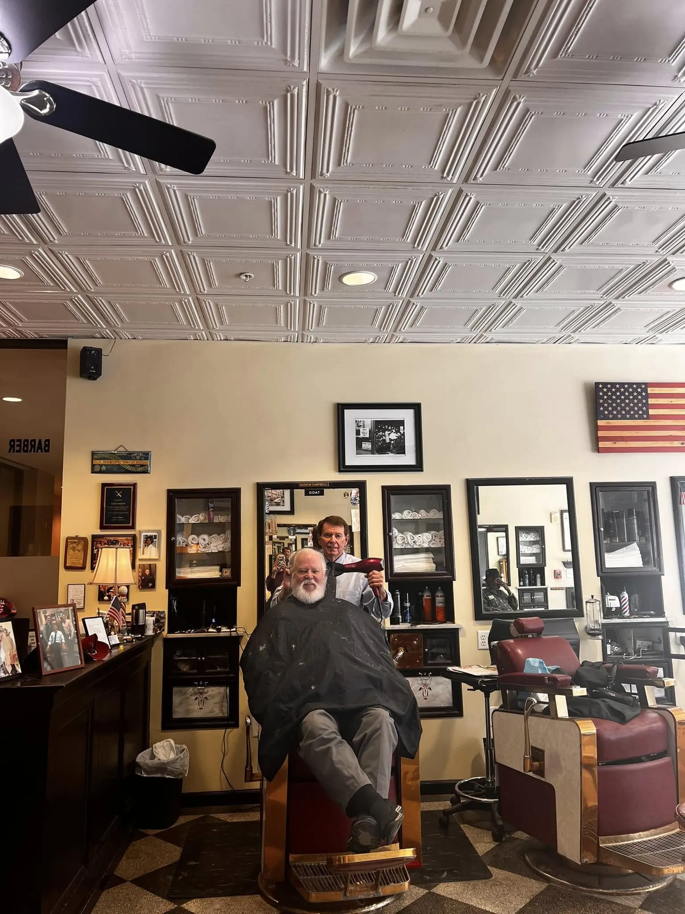
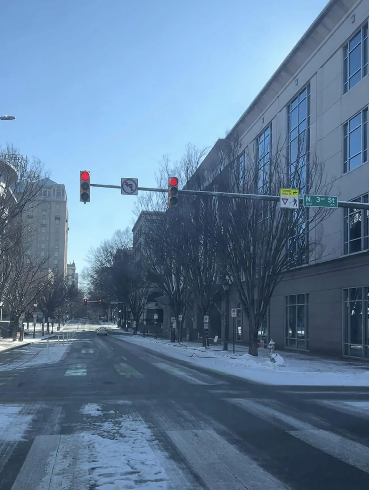
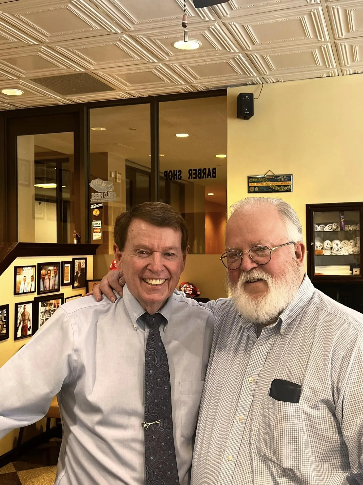
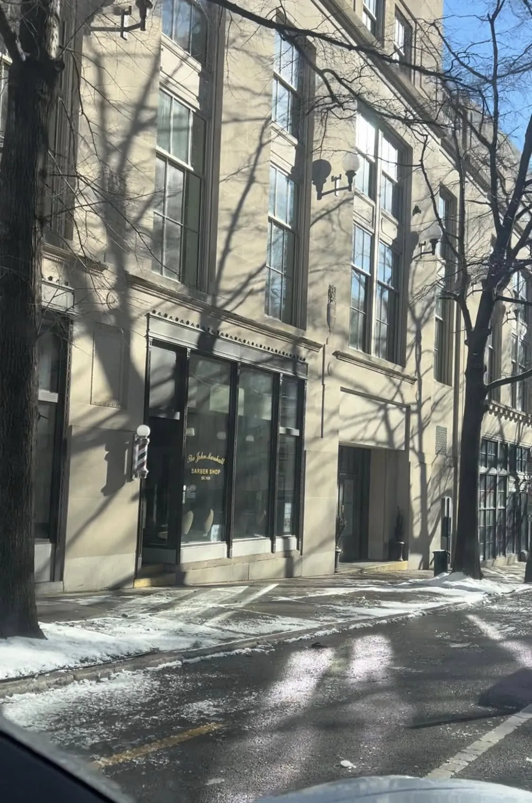

A Richmond barber shop since 1929.
The story of a shop that opened around the day of the stock market crash, outlasted the grand hotel above it, and came home to find its original marble floor waiting.

From 50 cents to now
-
October 1929
A shop opens as the market falls
The barber shop opened around the day of the stock market crash of 1929.[1][2] A haircut cost 50 cents.[1]
Upstairs, the Hotel John Marshall opened on October 30, 1929 — sixteen stories and 418 rooms, the largest hotel in Virginia at the time.[6] The shop sat at street level on the Franklin Street side, though, as Richmond Magazine later noted, it was “never officially part of the hotel.”[3]
-
1967
Hugh Campbell picks up the shears
Hugh Campbell began barbering in 1967. He went on to become the shop’s long-time owner and manager — described as only its third owner/manager[6] — and a 2024 Richmond Magazine profile still found him behind the chair as manager and barber.[4]
“It is a special shop.”
-
1988
The hotel goes dark
After nearly six decades hosting travelers — and, by tradition, the meeting of Virginia’s outgoing and incoming governors on inauguration day — the Hotel John Marshall closed in 1988.[6] The barber shop, never officially part of the hotel, carried on its own story.[3]
-
2007 – 2012
Five years across the street
As the old hotel was converted, the shop moved temporarily across the street and kept cutting.[1] The building reopened on December 21, 2011 as The Residences at the John Marshall, with 238 apartments.[6]

Downtown Richmond on a snowy winter day. -
June 11, 2012
Home again — and a floor from 1929
The shop returned to its original space on June 11, 2012. Restoration work uncovered the original 1929 marble floor, mirrors and marble countertops, hidden for years behind paneling.[1]
“It’s a wonderful environment. There is always great conversation.”
-
The handprint
A signature in the marble
One spot in the old floor had been damaged. Rather than hide it, it was patched with barber Hugh Campbell’s handprint and initials.[1]
Look down on your next visit: the floor carries a barber’s handprint alongside marble laid in 1929.
-
Today
Shirts, ties and conversation
Customers come from government, business and the Capitol a few blocks away, and the barbers still wear button-down shirts and ties.[4] The red leather chairs, checkerboard floor and walls of framed photographs are all still there at 502 East Franklin Street.
“Everything starts right here in the bottom of the John Marshall.”

Smiles inside the shop at Fifth & Franklin.

The Hotel John Marshall
Designed by architect Marcellus E. Wright Sr., the Hotel John Marshall opened on October 30, 1929 at Fifth and Franklin streets. For decades it was a center of Richmond life, and tradition had Virginia’s outgoing and incoming governors meet there on inauguration day. It closed in 1988 and reopened in 2011 as The Residences at the John Marshall.[6]
Notes & sources
- Richmond BizSense (2012), reporting on the shop’s 1929 opening, 50-cent haircuts, the 2007–2012 move, the June 11, 2012 return, the restored marble floor and the handprint patch.
- VCU Capital News Service (2018), on the shop’s opening around the 1929 stock market crash.
- Richmond Magazine (2012), noting the barber shop was “never officially part of the hotel.”
- Richmond Magazine (February 2024), profile of Hugh Campbell and the shop, its customers and dress code.
- WTVR CBS 6 (2012), coverage of the shop’s return, with quotes from Hugh Campbell and a longtime customer.
- Wikipedia, “Hotel John Marshall” — hotel history, architect, size, closing and reopening, and the shop’s owner/manager history.
- The John Marshall Barber Shop on Facebook — “around since 1929” in the heart of Downtown Richmond.
Take a seat in the story.
The chairs, the marble and the conversation are waiting at Fifth & Franklin. Call ahead to book your cut or shave.
(804) 649-7577